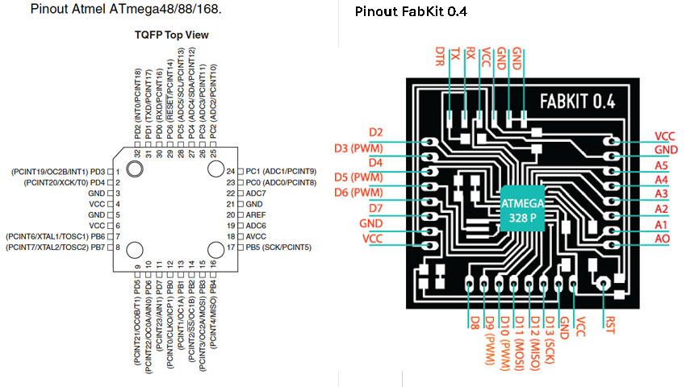

Output device
FabKit04


For output device, I prepared two boards but I still need to completely accomplish the assignments.
I first prepared a FabKit, version 04, an Arduino-compatible board designed by David Mellis and based on an ATMEGA382P microcontroller, and I followed the Massimo's tutorial. I laser cut and engraved the board using the C02 fiber laser of Open Dot FabLab in Milan instead of milling the pcb. I then cleaned the board up using an eraser and then soldered the components, including the ATMEGA. This appeared to be the most complex part to solder but in reality was quite easy.
To program the board, I used my FabISP that I connected with some jumper wires to the FabKit, following this scheme for Pin Out and the ATMEGA168 datasheet.

To power the FabKit04, I used a little arduino board USB-FTDI.

Once connected and powered everything, I tried several times to burn the FabKit bootloader, using the Arduino IDE (version 1.0) but apparently without success. I tried also to keep the FabKit reset button pushed while burning the bootloader but the warning message was always reporting me that the program wasn't able to read from a .hex file related to ATMEGA168 bootloader. The .hex file was at its place, and I couldn't find any helpful tips on this issue online. After severak hours of damnation, I then tried to upload a blinck sketch using the FabISP programmer and it looked to be working. Result: you don't need to burn any bootloader to program a FabKit.
HelloServo44 board

I wanted also to experiment with servo, and I started downloading images and schematics from the Academy archive of the hello.servo.44 board from Neil. I redesigned the board